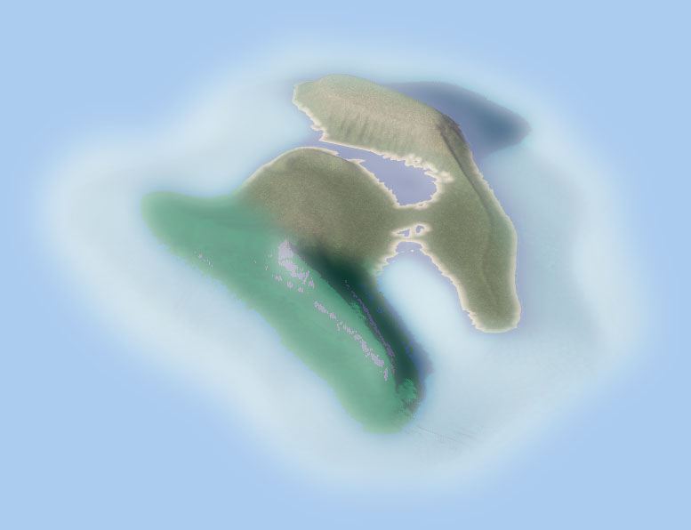

SC4TERRAFORMER
A tool for regional terraforming

Version v1.0c
Programmer : Wouanagaine
Testers : Ynterboy, CDB, jplumbley, prince_of_sims,SC4Boy, Romaq
Icon : trueplaya8892
Thanks to every one at Simtropolis
Visit the support thread for suggestions, bugs, and supports